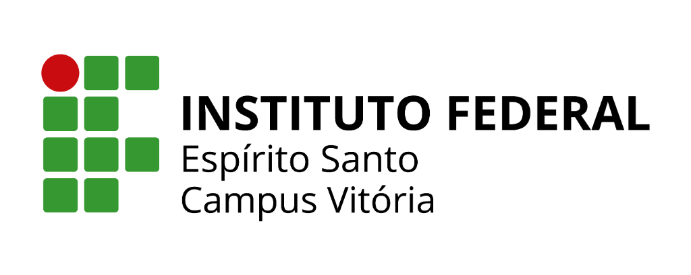
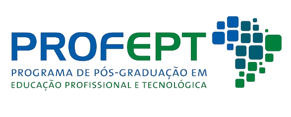

<!DOCTYPE html>
<html lang="pt-BR">
<head>
  <meta charset="UTF-8">
  <meta name="viewport" content="width=device-width, initial-scale=1.0">
  <title>Slides</title>
  <!-- Tailwind CSS Play CDN -->
  <script src="https://cdn.tailwindcss.com"></script>
  <!-- React and ReactDOM UMD builds -->
  <script src="https://unpkg.com/react@18/umd/react.production.min.js" crossorigin></script>
  <script src="https://unpkg.com/react-dom@18/umd/react-dom.production.min.js" crossorigin></script>
  <!-- Babel Standalone for in-browser JSX compilation -->
  <script src="https://unpkg.com/@babel/standalone/babel.min.js"></script>
  <style>
    @import url('https://fonts.googleapis.com/css2?family=Inter:wght@300;400;500;600;700;800&display=swap');
    body {
      font-family: 'Inter', sans-serif;
    }
  </style>
</head>
<body class="bg-slate-100 min-h-screen">
  <div id="root"></div>

  <script type="text/babel">
    const { useState, useEffect, useCallback } = React;

    // Inline SVG Icon Components (Lucide replacements)
    const ChevronLeft = ({ size = 24, className }) => (
      <svg xmlns="http://www.w3.org/2000/svg" width={size} height={size} viewBox="0 0 24 24" fill="none" stroke="currentColor" strokeWidth="2" strokeLinecap="round" strokeLinejoin="round" className={className}>
        <path d="m15 18-6-6 6-6" />
      </svg>
    );

    const ChevronRight = ({ size = 24, className }) => (
      <svg xmlns="http://www.w3.org/2000/svg" width={size} height={size} viewBox="0 0 24 24" fill="none" stroke="currentColor" strokeWidth="2" strokeLinecap="round" strokeLinejoin="round" className={className}>
        <path d="m9 18 6-6-6-6" />
      </svg>
    );

    const Presentation = ({ size = 24, className }) => (
      <svg xmlns="http://www.w3.org/2000/svg" width={size} height={size} viewBox="0 0 24 24" fill="none" stroke="currentColor" strokeWidth="2" strokeLinecap="round" strokeLinejoin="round" className={className}>
        <path d="M4 3h16" />
        <path d="M4 7h16" />
        <path d="M8 21v-4" />
        <path d="M12 21v-4" />
        <path d="M16 21v-4" />
        <path d="M2 17h20" />
        <path d="M12 7v10" />
      </svg>
    );

    const Lightbulb = ({ size = 24, className }) => (
      <svg xmlns="http://www.w3.org/2000/svg" width={size} height={size} viewBox="0 0 24 24" fill="none" stroke="currentColor" strokeWidth="2" strokeLinecap="round" strokeLinejoin="round" className={className}>
        <path d="M15 14c.2-1 .7-1.7 1.5-2.5 1-.9 1.5-2.2 1.5-3.5A5 5 0 0 0 8 8c0 1 .3 2.2 1.5 3.5.7.7 1.3 1.5 1.5 2.5" />
        <path d="M9 18h6" />
        <path d="M10 22h4" />
      </svg>
    );

    function App() {
      const [currentSlide, setCurrentSlide] = useState(0);

      const nextSlide = useCallback(() => {
        setCurrentSlide((prev) => (prev === slides.length - 1 ? prev : prev + 1));
      }, []);

      const prevSlide = useCallback(() => {
        setCurrentSlide((prev) => (prev === 0 ? prev : prev - 1));
      }, []);

      // Keyboard navigation
      useEffect(() => {
        const handleKeyDown = (event) => {
          if (event.key === 'ArrowRight') {
            nextSlide();
          } else if (event.key === 'ArrowLeft') {
            prevSlide();
          }
        };
        window.addEventListener('keydown', handleKeyDown);
        return () => window.removeEventListener('keydown', handleKeyDown);
      }, [nextSlide, prevSlide]);

      const SlideLayout = ({ title, tip, children }) => (
        <div className="flex flex-col h-full w-full px-12 py-8 bg-white text-slate-800 relative">
          {/* Header Logos */}
          <div className="absolute top-6 right-12 flex items-center space-x-6">
            
            
          </div>
          {title && (
            <div className="mb-8 border-b-2 border-green-600 pb-4 pr-56">
              <h2 className="text-4xl font-bold text-slate-900">{title}</h2>
            </div>
          )}
          <div className="flex-grow flex flex-col text-xl leading-relaxed justify-center">
            {children}
          </div>
          {tip && (
            <div className="mt-6 flex items-start bg-yellow-50 p-4 rounded-lg border border-yellow-200">
              <Lightbulb className="w-6 h-6 text-yellow-600 mr-3 flex-shrink-0" />
              <p className="text-sm text-yellow-800 italic">
                <strong>Dica de Apresentação:</strong> {tip}
              </p>
            </div>
          )}
        </div>
      );

      const slides = [
        // Slide 1 - Capa
        <div className="flex flex-col items-center justify-between h-full py-8 px-12 bg-white text-center">
          <div className="flex justify-between items-center w-full mb-4">
            
            
          </div>
          <div className="flex-grow flex flex-col justify-center items-center space-y-4">
            <div className="inline-block bg-green-100 text-green-800 font-bold px-4 py-1 rounded-full uppercase tracking-widest text-xs">
              IX SEPT / Seminário de Educação Profissional e Tecnológica
            </div>
            <h1 className="text-3xl font-extrabold text-slate-900 leading-tight max-w-4xl">
              Ação Extensionista como Espaço Pedagógico Formal para Inclusão e Alfabetização Digital de Pessoas Idosas no Uso Seguro de Tecnologias Móveis na Educação Profissional e Tecnológica
            </h1>
            <div className="w-20 h-1 bg-green-600 rounded-full"></div>
            <div className="space-y-1 text-lg text-slate-700">
              <p><strong className="text-slate-900">Mestranda:</strong> Rafaela Corrêa</p>
              <p><strong className="text-slate-900">Orientadora:</strong> Profa. Dra. Maria José de Resende Ferreira</p>
            </div>
          </div>
          <div className="mt-4 text-sm text-slate-500 font-medium border-t w-full pt-4">
            Instituto Federal do Espírito Santo — Campus Vitória — ProfEPT
          </div>
        </div>,

        // Slide 2 - Introdução
        <SlideLayout title="Introdução" tip="Falar sobre a sua trajetória em TI">
          <ul className="space-y-6 list-disc list-inside marker:text-green-600">
            <li><strong>EPT e Espaços Não Formais:</strong> Extensão como elo entre instituição e comunidade.</li>
            <li><strong>Lócus:</strong> CEET Vasco Coutinho (Vila Velha/ES).</li>
            <li><strong>Público:</strong> Pessoas idosas (60+).</li>
            <li><strong>Foco:</strong> Inclusão, alfabetização digital e uso seguro de dispositivos móveis.</li>
            <li><strong>Perspetiva:</strong> Além do acesso técnico; foco na mediação pedagógica intencional.</li>
          </ul>
        </SlideLayout>,

        // Slide 3 - Problema de Pesquisa
        <SlideLayout title="Problema de Pesquisa" tip="Ler de forma pausada e clara">
          <div className="flex items-center justify-center h-full">
            <blockquote className="text-3xl font-medium text-slate-800 italic text-center border-l-4 border-green-500 pl-8 py-4 bg-slate-50 rounded-r-lg shadow-sm">
              "De que maneira a ação extensionista, compreendida como espaço pedagógico formal da EPT, voltada à inclusão e à alfabetização digital de pessoas idosas, pode contribuir para sua autonomia digital, participação social e formação humana?"
            </blockquote>
          </div>
        </SlideLayout>,

        // Slide 4 - Objetivo Geral
        <SlideLayout title="Objetivo Geral">
          <div className="space-y-6">
            <p className="text-2xl text-slate-800 leading-normal">
              <strong>Investigar as potencialidades e os desafios</strong> da ação extensionista no CEET Vasco Coutinho como espaço pedagógico não formal, <strong>analisando as suas contribuições</strong> para:
            </p>
            <div className="grid grid-cols-2 gap-4 mt-8">
              <div className="bg-green-50 p-6 rounded-lg border border-green-100 flex items-center justify-center text-center">
                <span className="font-semibold text-green-800 text-xl">Alfabetização digital</span>
              </div>
              <div className="bg-green-50 p-6 rounded-lg border border-green-100 flex items-center justify-center text-center">
                <span className="font-semibold text-green-800 text-xl">Autonomia digital</span>
              </div>
              <div className="bg-green-50 p-6 rounded-lg border border-green-100 flex items-center justify-center text-center">
                <span className="font-semibold text-green-800 text-xl">Inclusão social em TI</span>
              </div>
              <div className="bg-green-50 p-6 rounded-lg border border-green-100 flex items-center justify-center text-center">
                <span className="font-semibold text-green-800 text-xl">Formação humana integral na EPT</span>
              </div>
            </div>
          </div>
        </SlideLayout>,

        // Slide 5 - Objetivos Específicos
        <SlideLayout title="Objetivos Específicos">
          <ol className="space-y-5 list-decimal list-inside marker:font-bold marker:text-green-600 ml-4">
            <li className="pl-2"><strong>Discutir</strong> as bases da EPT, inclusão digital e tecnologias móveis.</li>
            <li className="pl-2"><strong>Problematizar</strong> a extensão para democratização do saber e integração geracional.</li>
            <li className="pl-2"><strong>Compreender</strong> as demandas e dificuldades tecnológicas dos idosos (escuta ativa).</li>
            <li className="pl-2"><strong>Desenvolver e aplicar</strong> uma intervenção pedagógica extensionista.</li>
            <li className="pl-2"><strong>Avaliar</strong> os resultados para elaborar um produto educacional.</li>
          </ol>
        </SlideLayout>,

        // Slide 6 - Referencial Teórico
        <SlideLayout title="Referencial Teórico">
          <ul className="space-y-6 list-none">
            <li className="flex items-start">
              <div className="w-3 h-3 rounded-full bg-green-500 mt-2 mr-4 flex-shrink-0"></div>
              <div>
                <strong className="block text-slate-900">Formação Humana Integral:</strong>
                <span className="text-slate-600 text-lg">Ramos (2014); Ciavatta (2014).</span>
              </div>
            </li>
            <li className="flex items-start">
              <div className="w-3 h-3 rounded-full bg-green-500 mt-2 mr-4 flex-shrink-0"></div>
              <div>
                <strong className="block text-slate-900">Extensão como Prática Dialógica:</strong>
                <span className="text-slate-600 text-lg">Freire (1985).</span>
              </div>
            </li>
            <li className="flex items-start">
              <div className="w-3 h-3 rounded-full bg-green-500 mt-2 mr-4 flex-shrink-0"></div>
              <div>
                <strong className="block text-slate-900">Tecnologia Não Neutra:</strong>
                <span className="text-slate-600 text-lg">Vieira Pinto <em>apud</em> Silva (2013).</span>
              </div>
            </li>
            <li className="flex items-start">
              <div className="w-3 h-3 rounded-full bg-green-500 mt-2 mr-4 flex-shrink-0"></div>
              <div>
                <strong className="block text-slate-900">Inclusão e Alfabetização Digital (60+):</strong>
                <span className="text-slate-600 text-lg">Flauzino <em>et al.</em> (2020); Irigaray e Gonzatti (2020); Souza, Costa e Epaminondas (2019).</span>
              </div>
            </li>
          </ul>
        </SlideLayout>,

        // Slide 7 - Metodologia
        <SlideLayout title="Metodologia">
          <div className="grid grid-cols-2 gap-8 h-full">
            <div className="bg-slate-50 p-6 rounded-xl border border-slate-200 shadow-sm">
              <h3 className="text-2xl font-bold text-green-700 mb-4 border-b pb-2">Abordagem</h3>
              <ul className="space-y-4 text-lg">
                <li><strong>Tipo:</strong> Métodos mistos (Sequencial explanatório).</li>
                <li><strong>Natureza:</strong> Aplicada, exploratório-descritiva (Gil, 2026).</li>
                <li><strong>Pesquisa Participante:</strong> Protagonismo dos sujeitos.</li>
                <li><strong>Lócus:</strong> CEET Vasco Coutinho ou espaço parceiro.</li>
                <li><strong>Sujeitos:</strong> Pessoas idosas (60+), adesão voluntária.</li>
              </ul>
            </div>
            <div className="bg-slate-50 p-6 rounded-xl border border-slate-200 shadow-sm">
              <h3 className="text-2xl font-bold text-green-700 mb-4 border-b pb-2">Etapas e Instrumentos</h3>
              <ul className="space-y-4 text-lg">
                <li><strong>Fase 1 (Quantitativa):</strong> Questionário diagnóstico (Google Forms).</li>
                <li><strong>Fase 2 (Qualitativa):</strong> Entrevistas, rodas de conversa, observação, diário de campo, fotografia/vídeo.</li>
                <li><strong>Análise:</strong> Qualitativa de conteúdo (categorias temáticas); falas anonimizadas.</li>
              </ul>
            </div>
          </div>
        </SlideLayout>,

        // Slide 8 - Etapas da Pesquisa
        <SlideLayout title="Etapas da Pesquisa">
          <div className="grid grid-cols-2 gap-x-8 gap-y-4 text-lg items-center">
            {[
              "Revisão de literatura e dados oficiais.",
              "Levantamento de produtos educacionais correlatos.",
              "Planeamento da ação extensionista.",
              "Elaboração dos instrumentos de recolha.",
              "Seleção e convite aos participantes.",
              "Realização da ação prática.",
              "Recolha de dados em campo.",
              "Organização e análise dos dados.",
              "Sistematização do Produto Educacional.",
              "Redação final (Dissertação e Produto)."
            ].map((etapa, index) => (
              <div key={index} className="flex items-center space-x-3 bg-slate-50 p-3 rounded-lg border border-slate-100">
                <span className="flex items-center justify-center w-8 h-8 rounded-full bg-green-600 text-white font-bold text-sm flex-shrink-0">
                  {index + 1}
                </span>
                <span className="text-slate-700">{etapa}</span>
              </div>
            ))}
          </div>
        </SlideLayout>,

        // Slide 9 - Produto Educacional
        <SlideLayout title="Produto Educacional">
          <div className="grid grid-cols-2 gap-8">
            <div className="space-y-6">
              <div className="bg-green-50 border-l-4 border-green-600 p-5 rounded-r-lg">
                <h3 className="text-xl font-bold text-slate-800 mb-2">O Produto</h3>
                <ul className="space-y-2 text-lg text-slate-700">
                  <li><strong>Tipo:</strong> Guia/Caderno Pedagógico de Oficinas.</li>
                  <li><strong>Público-alvo:</strong> Pessoas idosas e instituições de EPT.</li>
                  <li><strong>Finalidade:</strong> Orientar oficinas para o uso seguro de tecnologias móveis.</li>
                  <li><strong>Disponibilização:</strong> Depósito no eduCAPES.</li>
                </ul>
              </div>
            </div>
            <div className="space-y-4">
              <h3 className="text-2xl font-bold text-slate-800 mb-4">Eixos Norteadores</h3>
              <div className="bg-slate-50 p-4 rounded-lg border border-slate-200">
                <strong className="text-green-700 block mb-1">Conceitual:</strong>
                <span className="text-slate-600 text-base">Formação humana integral e extensão dialógica.</span>
              </div>
              <div className="bg-slate-50 p-4 rounded-lg border border-slate-200">
                <strong className="text-green-700 block mb-1">Comunicacional:</strong>
                <span className="text-slate-600 text-base">Linguagem simples, acessível e dialógica.</span>
              </div>
              <div className="bg-slate-50 p-4 rounded-lg border border-slate-200">
                <strong className="text-green-700 block mb-1">Pedagógico:</strong>
                <span className="text-slate-600 text-base">Foco em demandas, barreiras, segurança e autonomia.</span>
              </div>
            </div>
          </div>
        </SlideLayout>,

        // Slide 10 - Referências
        <SlideLayout title="Referências Bibliográficas">
          <ul className="space-y-4 text-base text-slate-600 list-disc list-inside marker:text-slate-400">
            <li>BORGES, F. L. R. <em>et al</em>. Elaboração de uma cartilha... Revista Contemporânea, 2025.</li>
            <li>CIAVATTA, M. A historicidade das reformas... Cadernos de Pesquisa, 2014.</li>
            <li>FREIRE, P. <em>Extensão ou comunicação?</em> Paz e Terra, 1985.</li>
            <li>GIL, A. C. <em>Como elaborar projetos de pesquisa</em>. Atlas, 2026.</li>
            <li>RAMOS, M. N. <em>História e política da educação profissional</em>. IFPR, 2014.</li>
            <li>SILVA, J. A. (Vieira Pinto <em>apud</em>...).</li>
            <li>SOUZA; COSTA; EPAMINONDAS, 2019; FLAUZINO <em>et al</em>., 2020; IRIGARAY; GONZATTI, 2020.</li>
          </ul>
          <div className="mt-8 text-center text-green-700 font-bold text-2xl">
            Obrigada!
          </div>
        </SlideLayout>
      ];

      return (
        <div className="min-h-screen bg-slate-100 flex flex-col items-center justify-center p-4 md:p-8 font-sans selection:bg-green-200">
          
          {/* Header com Instruções */}
          <div className="w-full max-w-5xl flex justify-between items-center mb-4 text-slate-500 text-sm">
            <div className="flex items-center space-x-2">
              <Presentation size={18} className="w-[18px] h-[18px]" />
              <span>Slides</span>
            </div>
            <div>Use as setas (← / →) do teclado para navegar</div>
          </div>

          {/* Slide Container (16:9 Aspect Ratio) */}
          <div className="w-full max-w-5xl aspect-video bg-white rounded-xl shadow-2xl overflow-hidden relative transition-all duration-300 ring-1 ring-slate-900/5">
            {slides[currentSlide]}
          </div>

          {/* Controls */}
          <div className="w-full max-w-5xl flex items-center justify-between mt-6 bg-white p-4 rounded-xl shadow-sm border border-slate-200">
            <button
              onClick={prevSlide}
              disabled={currentSlide === 0}
              className="flex items-center space-x-2 px-4 py-2 rounded-lg font-medium transition-colors disabled:opacity-40 disabled:cursor-not-allowed text-slate-600 hover:bg-slate-100 hover:text-slate-900"
            >
              <ChevronLeft size={20} className="w-5 h-5" />
              <span>Anterior</span>
            </button>

            <div className="text-slate-500 font-medium">
              Slide {currentSlide + 1} de {slides.length}
            </div>

            <button
              onClick={nextSlide}
              disabled={currentSlide === slides.length - 1}
              className="flex items-center space-x-2 px-4 py-2 rounded-lg font-medium transition-colors disabled:opacity-40 disabled:cursor-not-allowed bg-green-600 text-white hover:bg-green-700 shadow-sm"
            >
              <span>Próximo</span>
              <ChevronRight size={20} className="w-5 h-5" />
            </button>
          </div>

          {/* Progress Bar */}
          <div className="w-full max-w-5xl h-1 bg-slate-200 rounded-full mt-4 overflow-hidden">
            <div 
              className="h-full bg-green-500 transition-all duration-300 ease-out"
              style={{ width: `${((currentSlide + 1) / slides.length) * 100}%` }}
            />
          </div>
        </div>
      );
    }

    const root = ReactDOM.createRoot(document.getElementById('root'));
    root.render(<App />);
  </script>
</body>
</html>
